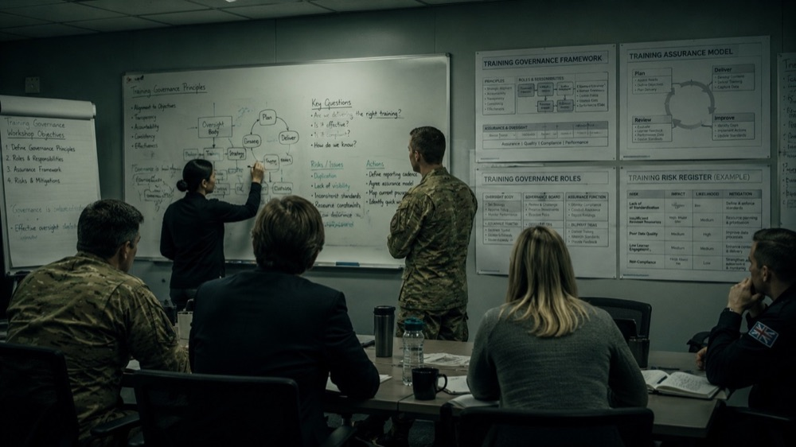

DSAT, governance and capability — from someone who's served.
Specialist support for the Ministry of Defence, Defence Digital, DE&S, Front Line Commands and prime contractors — covering JSP 822, training governance, Training Needs Analysis, capability frameworks, readiness and learning assurance.
Built for Defence — at the enterprise and the front line.

DSAT and capability expertise, applied to your operating environment.
JSP 822 Expertise
Practical, current application of JSP 822 and the Defence Systems Approach to Training — without drowning teams in process.
DSAT Consultancy
End-to-end DSAT support, from analysis and design through to governance and assurance.
Training Needs Analysis
DSAT-compliant TNA that separates real training need from capability, structure and process issues.
Capability Frameworks
Multi-specialisation competency frameworks and skills mapping for assessment and workforce planning.
Training Governance
Audit-ready governance and clear decision rights across providers, sites and the training pipeline.
Readiness Assessment
Evidence-based assessment of whether people, roles and competencies are aligned to operational demand.
Learning Assurance
Assurance that learning is effective, compliant and defensible — supporting the mission, not just the inspection.
The thinking I bring to every Defence engagement.
How capability actually delivers performance.
Our primary framework. Performance is traced from mission down to evidence — when any layer is missing, capability fails, and no amount of training fixes it.
When training isn't the answer.
A simple test that stops organisations spending on courses when the real issue is structure, governance or leadership.
Trace performance from mission to measurement.
Capability only delivers when every layer aligns — outcomes, capability, behaviours, evidence and assurance.
A proprietary, repeatable method for turning capability problems into measurable performance.
Understand the Mission
Get clear on what the organisation actually needs to achieve, and the standard performance has to meet.
Analyse the Capability Gap
Measure the real distance between current capability and what the mission demands — with evidence, not assumption.
Identify Root Causes
Separate genuine training needs from problems of structure, governance, leadership or process.
Design the Right Intervention
Build the solution that fits the cause — learning where it helps, but also structure, assurance or workforce design.
Measure Impact
Track the outcomes that matter: readiness, performance, compliance, completion and time-to-competence.
Improve Continuously
Feed results back in, so capability keeps improving rather than decaying once the project ends.
Delivered across MOD, Royal Navy and NATO programmes.
Digital Skills for Defence
DSAT-aligned capability analysis, TNA and learning architecture adopted for Defence-wide planning.
Capability Framework Design
Consistent competency standards that increased operational readiness by 20%.
NATO & Royal Navy Modernisation
DSAT-compliant TNA, blended learning and coaching — 17% higher pass rates, 20% fewer failures.
Active SC clearance, senior Royal Navy leadership, and DSAT specialism.
Common questions from Defence programme teams.
Current. DSAT and JSP 822 application is ongoing specialist work, not a historic qualification — I keep pace with how the policy is actually being applied and audited today.
Yes — this is exactly what the Senior Information Officer (SIO) Rapid TNA case study demonstrates. Used as a decision-support framework rather than a box-ticking process, DSAT can move fast without losing defensibility.
I hold Active SC clearance and am a former DV holder, and I'm comfortable operating in secure, regulated environments. If your programme needs a different level of vetting, tell me early and we'll work out whether that's achievable.
Both. I've supported enterprise-wide MOD programmes directly and worked alongside prime contractors and Front Line Commands on specific capability, TNA and governance workstrands.
It depends on the problem: a rapid TNA can be delivered in weeks; an enterprise capability framework or DSAT governance rebuild is typically a multi-month engagement. The Capability Readiness Review at the start gives both of us a realistic view before committing to scope.
Need DSAT or capability support?
Tell me what you're facing — JSP 822, governance, TNA or readiness. A practical conversation, no sales pitch.